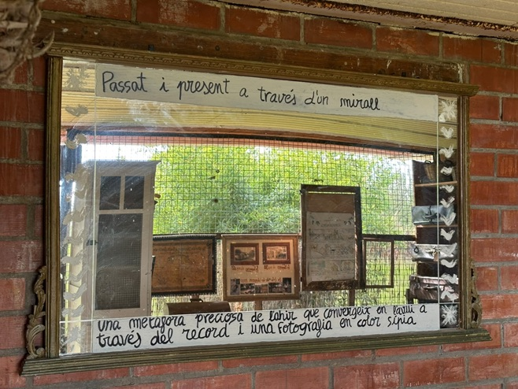
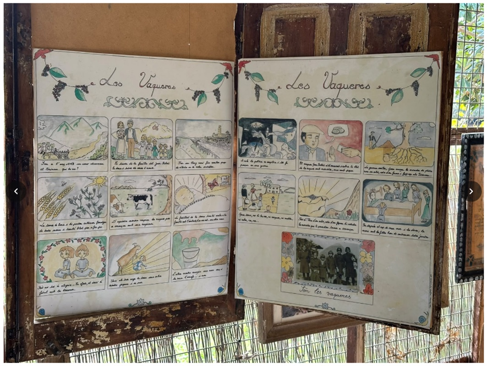
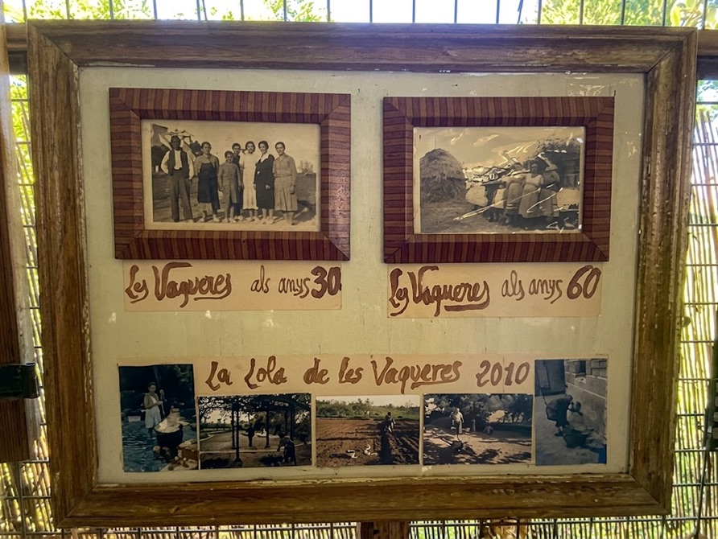
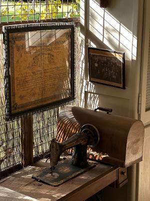
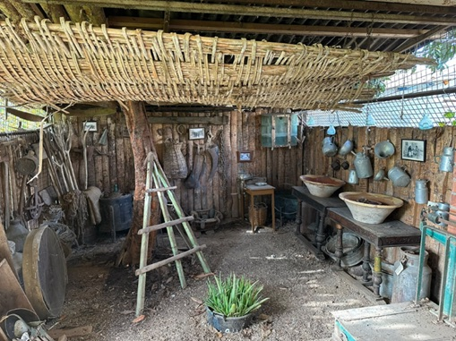
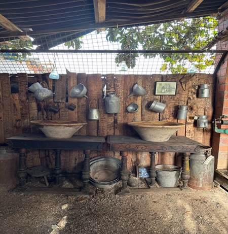
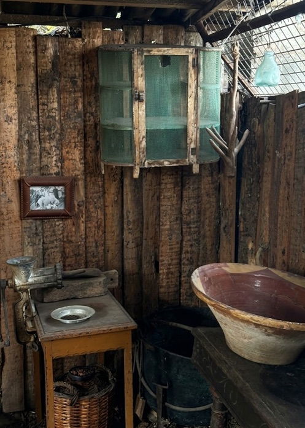
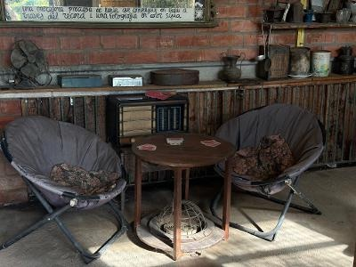
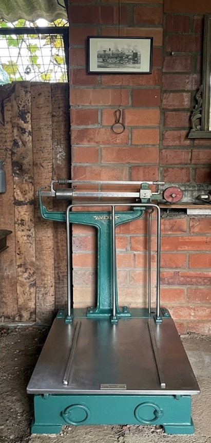

The museum: looking at the past from the present

Stepping into this space is a journey back in time, to a way of life shaped by self-sufficiency and by making the most of one’s own resources. Old utensils, work tools, photographs, maps and keepsakes bring us closer to a time when daily life was closely tied to the land, to work, and to knowledge handed down from one generation to the next.
The museum invites us to discover this part of our history through objects and photographs that belonged to a family from the Horta, from Les Vaqueres. It is a testimony that lets us learn about the customs, the work and the ways of life of a world that moved from a subsistence economy, based on producing for one’s own use, to an economy increasingly geared towards production.
Along the way we also find memories of our own personal and shared history: school, trades, household chores, and the small things that made up everyday life for the families of the Horta de Lleida.
The museum shows that self-sufficiency was not only a matter of work in the fields, but also of household knowledge, practical skills and making use of whatever was available: making soap at home, making brooms and using what the land around them offered, but also knowing how to make clothes and mend them: patching and reusing to make them last longer.
We wanted to shape a project of great heritage and human value. Through the objects, photographs and memories of the Les Vaqueres family, we have recovered a way of life that feels far away today, but that helps us understand where we come from.
In this museum you will not find a simple inventory of old utensils: we have tried to tell the story of the people behind them, their knowledge, their needs, their efforts, and also their moments of happiness.
Objects hold the memory of things; the stories we tell bring them to life and help us understand who we are and where we come from.
The visit follows three threads:
- Daily life: how families lived, worked and organised themselves.
- Self-sufficiency: making the most of resources, and the knowledge and skills that made it possible to live on little.
- Family and shared memory: the people, the memories and the small stories that help us understand a period.
Self-sufficiency did not mean that a family produced absolutely everything, but that it tried to depend as little as possible on outside resources.
Past and present in a mirror

At the entrance we are greeted by a large mirror with a message that invites us to stop and look.
A precious glance at yesterday that meets today, through memory and a sepia photograph.
The mirror is much more than decoration: it is a metaphor for the dialogue between past and present. When we look into it, we see not only our own reflection but also recognise ourselves as part of a story that came before us and that, in some way, lives on in us.
It is an invitation to look back to understand where we come from, to value what we have inherited, and to discover the ties that bind us to the generations before us.
From the Pyrenees to the Horta de Lleida: a family story

This illustrated comic tells the story of the Les Vaqueres family, from its roots in the mountains to its arrival and settling on the plain of Lleida.
The panels show the road travelled, the changes in the way of life, and the start of a new chapter in a different land. It is a family story that is also part of a wider migration: that of many families from the Pyrenees who came down to the flatlands in search of new opportunities, and who helped shape and settle the Horta de Lleida.
The comic brings us closer to the lives of those generations who, through effort, hard work and the ability to adapt, put down roots in a new land. It is a record of family memory and, at the same time, a piece of the history of how the Horta de Lleida was settled and transformed.
Behind every family there is a road, a place of origin and a story worth telling. These panels help us recover it and keep alive the memory of the generations who came before us.
Les Vaqueres: three generations, one life story

This frame helps us understand a way of organising life, working, relating to the land and passing on knowledge.
When the people who lived a way of doing things are gone, their objects, photographs and memories become witnesses to a world that will not return, but that is worth preserving.
This frame is special because it tells almost a century of family history through three different moments. It is not just a collection of photographs: it is a visual account of a family’s continuity, of the changes between generations, and of how ways of life were transformed. Three snapshots that let us watch time pass, generations change, and a way of living transform.
The 1930s: the beginnings of a new life
The first photograph shows the married couple and their daughters, the members of the family who came down from the mountains to the plain of Lleida to begin a new chapter there. They are the first characters in a story shaped by hard work, putting down roots in the land, and building a new home.
The 1960s: a new generation takes over
The second photograph takes us to a time of change. A new generation has taken over: Antònia has married and is already the mother of two children. The family keeps growing and life goes on.
The picture also holds the memory of a family history marked by the Civil War and exile. In it we can see the car of some relatives who had gone into exile in France and who, years later, were able to enter Spain again. A detail that speaks of reunions, distance, and family ties that time and politics had not managed to break.
2010: Lola, a living memory of a way of doing things
The last set of photographs brings us to Lola, the last of Les Vaqueres, who died in 2010. In a society that had already changed profoundly, she still kept and practised some of the knowledge and customs of the self-sufficient economy. She is a key figure in the museum: the bridge between the world of self-sufficiency and today’s society.
She still made brooms from botja plants gathered at La Mitjana and made soap at home, keeping alive traditional skills that had been part of everyday life for the generations before her.
With Lola a chapter closes, but the memory remains of a way of life based on using what the land provides, on manual work, and on know-how passed down from generation to generation.
These photographs remind us that history is found not only in great events, but also in people’s lives, in their everyday gestures, and in the small pieces of knowledge that, if not preserved, can disappear with them.
The suitcases: memories of exile, return and hope

These suitcases tell a hard story, but they also speak of people’s ability to rebuild their lives. They stand for forced journeys, uncertainty, families torn apart, and the hope of finding a place to start again.
These are not suitcases for going on holiday. They hold stories of life, separation and survival. They stand for the roads that some members of the family, like so many other people, had to take in hard times: exile to France to escape the war and repression, and the return to the mountains after being driven from their home.
Behind each suitcase is a journey that was not always chosen, but forced by circumstance. Leaving meant leaving behind the house, the land, the memories and often part of the family, in the hope of finding somewhere safer to live.
Today these suitcases still keep part of that story. They hold family documents and keepsakes: deeds, ration books, photographs and other records of a time marked by war, hardship and social change.
They have become small archives of memory that help us piece together the family’s experiences and better understand how those events affected people’s everyday lives.
Because sometimes a suitcase does not hold what we choose to take with us, but everything we are forced to leave behind.
Learning to sew: clothing the whole family

In a family economy based on self-sufficiency, saving money and keeping costs as low as possible was a necessity. Many jobs that today we hand to professionals or solve by buying something new were done at home back then, using the family’s own resources and know-how.
The sewing machine is the star of the picture, but behind it lies a story of learning, initiative and household economy.
This is the story of Antònia, one of the Vaqueres sisters and mother of two, who decided to learn to sew. She took a dressmaking course (corte y confección) and earned the certificate showing she had the skills to make clothes for the whole family.
The frame keeps the memory of that training: the course certificate and a group photograph of all the young women who took part. Beside it is the sewing machine, the essential tool for turning fabric into clothes, making alterations and making clothes last longer.
Sewing at home meant a big saving for the family budget, but it also meant gaining a useful and valuable skill. It was a way of meeting everyday needs with ingenuity, dedication and one’s own work.
The sewing machine thus becomes a witness to a way of life in which knowing how to do things yourself was an essential part of self-sufficiency.
The school: one homeland, one language, one religion

This corner recreates the atmosphere of a rural school under the Franco dictatorship, and takes us back to a time when education was heavily shaped by the regime’s ideology.
Here we find some of the typical features of classrooms in those years: the wooden desks, the books, the school materials and the map that hung on the wall. There is also the sign from the Santa Catalina school, which stood in the district: a reminder of the old rural schools that were part of life for many families in the Horta. In the Grenyana district, it was complemented by the official school, which was housed in the church sacristy.
Education under Franco rested on three main principles: one homeland, Spain; one language, Spanish; and one religion, Catholicism. School thus became a tool for passing on the patriotic, religious and social values imposed by the regime.
In Catalonia, Catalan was excluded from official teaching and from school life, while Spanish became the compulsory language of the school. The Catholic religion, for its part, held a central place in children’s education and upbringing.
This space invites us to remember what going to school was like at that time, what was taught, and the world in which children grew up. It also lets us reflect on how school, besides teaching reading and writing, can mirror the society and the moment in history it belongs to.
The map, a fixture of every classroom, also reminds us of the role school played in passing on knowledge and the view of the world of that time.
Life outdoors: working the fields and making the most of the land

Life outdoors revolved around working the land and getting from it everything needed to live. Each crop had a specific purpose and was meant to feed both the people and the animals of the house.
In the fields they grew alfalfa and other fodder for the livestock, and wheat to make flour and bread, which also gave straw for many uses. They also grew beets for the pigs, turnips for the cows and maize to feed the hens.
The vegetable garden was in use all year round. Vegetables were grown for the family, following the rhythm of the seasons. Along the edges of the fields there were a few fruit trees, whose harvest was used throughout the year.
Nothing could go to waste. When harvest time came, they also had to think about winter. Food was stored, and preserves, jams and other homemade goods were prepared so there would be fruit and vegetables when fresh ones were no longer available.
One thing that especially catches the eye is the canyís, the cane rack hanging from the ceiling. Made of woven canes, it was used to store fruit, especially apples, and keep it through the winter months. Hanging it high made good use of the space and kept the food in the right conditions to last, so it would not spoil and the rats could not reach it.
This collection of tools, utensils and traditional objects shows a way of life in which work followed the rhythm of nature. Growing, harvesting, feeding the animals and preserving food were all part of a single cycle, based on making the most of one’s own resources and planning for the needs of the whole year. Self-sufficiency was not simply about producing food, but about knowing how to plan and use resources to cover the needs of the entire year.
It was an economy in which almost everything had a use, and in which everyday know-how was essential to keep the house and the family going.
The dairy

This space tells of another key activity in the family economy: producing and selling milk. It shows how some families, once settled in the Horta de Lleida, added livestock to their farm work and turned milk into a source of income. The photograph also keeps the utensils used for this work and helps us imagine how that small family business ran.
When families from the Pyrenees settled in the Horta de Lleida, many added cattle raising to their daily work. Producing milk became a way to round out the family economy and earn money from their own labour.
At Les Vaqueres, the milk went two ways: part was sold directly to neighbours in the district, who came to the farmhouse to buy it for daily use, and whatever was left over was taken to Lleida to be sold.
The dairy was therefore an activity that linked life in the house with its immediate surroundings. On one hand it supplied neighbouring families with fresh milk, and on the other it let the family take its product to the city.
The dairy utensils on display, the churns, the measures and the milk cans, remind us how milk was collected, stored and distributed. They were essential to an activity that demanded constant, daily work, tied to milking times and to the need to get fresh milk to customers. We can even see the milking stool.
This work shows how families combined farming and livestock to make the most of what they had. The land fed the animals, the animals gave milk, and selling it helped support the household.
The dairy is an example of how self-sufficiency and earning a living often went hand in hand: producing for the family’s own needs, but also selling the surplus to get the money needed for other household expenses.
Self-sufficiency: using everything the land offers

This part of the museum captures the idea of self-sufficiency that gives it meaning. The photograph shows a wide range of simple but very specialised tools that made it possible to use what the natural surroundings offered.
In those days the natural world was like a larder within the family’s reach, and you had to know how to make use of everything it offered. Each activity had its own tools, and each object met a specific need of daily life.
These tools speak of that way of life and of the ability to find food in different parts of the landscape: the fields, the vegetable garden, the trees, the river and the field edges.
Here we find, for example, the caragolera, used to keep snails; the filat, a net used for fishing in the river; the small basket for collecting the hens’ eggs; and the ratera, a trap used to catch small birds.
The box also holds various work tools: the serpeta for picking olives, the sticks for sowing maize, the sickle, and other tools that each had a specific job in the fields.
Most of the food gathered was eaten by the family. When the harvest or foraging gave more than was needed, the surplus could be taken to sell at the market. In this way, what came from the land not only helped feed the household but could also bring in a little income.
We realise that imagination, observation and knowledge of the surroundings were as important as the tools themselves. Making use of everything was a necessity, but also a way of understanding life.
El mandongo: the pig, a larder for the whole year

In the self-sufficient family economy, the pig played a vital role. Together with the farmyard birds, which provided eggs and meat, it was one of the main sources of protein in the diet.
The pig was fed all year round on scraps from the house and the vegetable garden, until the time came for the slaughter, traditionally in the coldest months, often in January. The low temperatures made it easier to handle and preserve the meat.
The mandongo was much more than killing the pig: it was a whole series of tasks that required organisation, experience and knowledge handed down from generation to generation. Every part of the animal had to be used and turned into food that would keep for months.
To do this, different preserving techniques were used: cuts of meat were dried; sausages were made and hung up to cure; some were cooked; and tupina was made, a technique for preserving meat in fat.
The utensils in this space bring us closer to that hard, shared work, which turned the slaughter into a celebration that meant food stores for a good part of the year.
The pig was, in short, a true family larder. Thanks to planning, hard work and knowledge of preserving, a single slaughter provided different meat products for many months, until the cycle came round again the following year. The mandongo is a perfect example of this culture of planning ahead: it was not just about getting food, but about knowing how to transform and preserve it so that it would last.
Nothing could be wasted: every part of the animal had a use, and every product helped make sure the family had enough to eat.
Time off: cards, radio and conversation

Daily life was not only work and duties. There were also moments to rest, have some fun and spend time together as a family.
Some evenings, when the day’s work was done, or on Sundays, when Carmeta, the sister who lived in Lleida, came to visit and they all got together, this corner became a small meeting place. They were moments everyone looked forward to.
Cards were one of the most common pastimes. A game was a way to pass the time, chat and share a laugh. Meanwhile the radio, always on, kept them company with music, news and the programmes that were part of everyday life, such as a radio serial or the Señora Francis show.
There was also time to tell stories, share memories, look at photos and catch up. You didn’t need much to have a good time: a pack of cards, a radio and the company of family were enough.
This corner reminds us of another side of self-sufficiency: a simple life in which leisure was built around the home and family ties. Within the museum, it shows us the most human side of family life: families also found ways to enjoy life.
Because beyond the work and the daily needs, it is also these small shared moments that make up a family’s memories.
This corner speaks of a wealth that was not measured in money, but in time spent together.
The scale: towards a new farming economy

This last space matters especially because it closes the museum visit with a key idea: the transformation of the family economy, which moved step by step from self-sufficiency and subsistence to farming for production and sale.
Little by little, the old cereal crops gave way to fruit trees, mainly pears and apples. What the farm produced was no longer just for the household: selling at market became more and more important.
Three objects help us understand this change.
The photograph: new crops, new work
In one of the photographs we see Antònia and her husband, Josep, preparing lime sulphur (calcium polysulphide) to treat the fruit trees and protect them from disease and pests. It is a picture of adapting to a new kind of farming, which called for new knowledge, techniques and upkeep.
The scale: weighing to sell
The scale became an essential tool once fruit growing took centre stage. Every crate of pears and apples picked on the farm was weighed on it, a necessary step in preparing the harvest and selling it.
The size gauge: fruit for the market
The other object is the size gauge, used to check the size of the pears and sort them by the dimensions required for sale. Fruit was no longer valued only for the family table: it also had to meet standards of quality and commercial grading.
These three objects tell of the move towards more specialised, market-oriented farming. The land was still the main livelihood, but needs and ways of working had changed.
The scale thus marks the end of one cycle and the start of a new one: from an economy that produced mainly to live, to one that also had to produce to sell.
The Virtual Museum of Traditional Farming Technology

The Virtual Museum of Traditional Farming Technology (MVTAT) has been created within the History, Documentation and Heritage Service of the History Department at the University of Lleida.
The museum aims to highlight a wide range of tools and techniques that shaped the history of rural life until fossil fuels came into widespread use in farming and in selling its produce. It also shows the first tractors and machines, so they can be compared with the tools of traditional farming, where draught animals and human labour were the main sources of power, along with a few technologies driven by wind or water.
We take part by presenting our own museum, “Eines de les Vaqueres”, where the transformation of farming and the gradual move into a market economy are shown through the story of a family from the Horta de Lleida, which tells of the way of life of that whole period.